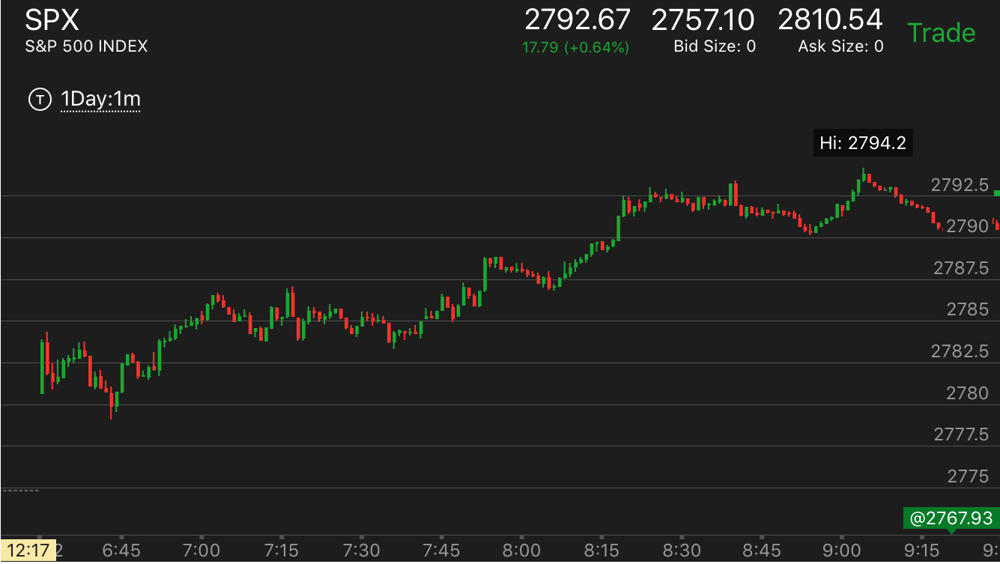

=====================================================================================
大势判断程序，跌势中是否转向
下跌的主要走势是否爆发，就是休息一段，然后再次暴跌
盘中出现新低
如果有反转走势，反转走势可以是，双底，两段下跌反转，两次跨越反转，是否产生第二段上涨
盘中是否有真空没有填
=====================================================================================
大势判断程序，升势中是否转向
升势的主要走势是否爆发，就是休息一段，然后再次大涨
盘中是否有真空没有填
上涨的过程中是否稳健
=====================================================================================
做空的时候，大盘不断上涨
前面的跌势是否有激烈的行为，比如加速，或者快速下跌
走势是否有回调后新高，或者各种稳健上涨的样子
在转折的地方，是否出现了双底或者走平
是否和直觉相反
=====================================================================================
不容易判断但是会出现巨额利润的走势，
走势形状
=====================================================================================
大盘处在上升期间
大盘处在下跌期间
刚刚开盘后的小型走势
两段走势的分析
走势转折点形状的分析
真空走势
走势转折点形状的分析
TOP
1. 一个走势的转折点，不会一下就反转的。一定是有至少4分钟以上，所以不用着急的去做这个走势，
而且一定是要是第二段走势，就是说，如果一个走势发生了第二段，在转折点有加速或者激烈的行为，
然后有平坦的样子，才是转折点，如果没有，那么就是要持续发展。不要反向操作。如果已经做了。
那么就一直拿住。或者看到它要回调，可以出来，但是不要反向操作。不挣回调的钱。
2. 双底和双顶的特点：两个顶部和底部一定有一个是平坦的，另外一个则是尖端的。
比如双底走势中，如果第一个平坦，那么它稍微反弹后，可能迅速下跌到原来的低点，甚至短时间跌破这个点，
然后立刻反弹。如果第一个立刻反弹，那么第二个会停留一段时间。然后反弹。双顶走势也是如此。
一旦确认是顶部或底部，不要怕错过了2，3个点，要去追赶，它会动很多个点的。

图示：8：00是个底部，它是平坦的，反弹后，力量不大，8：50又回来，
跌破低点后，立刻反弹。这个关键在于它反弹幅度不大。所以它下来后，仍然是双底走势。如果反弹很大。
那么这个再次下跌，可能跌破原来低点，继续走低了。象7：40的反弹，幅度很大。那么它再次下来，就跌破了低点。

图示：
1. 7：40冲高后，在高点稍微低不到一个点的地方停留了4分钟，然后
稍微走低一些，继续在高点停留了5分钟，然后才大跌。所以有充足的时间来考虑做空。
2. 9：00和10：00的两个底部，第一个平坦，第二个立刻反弹

图示：7：50似乎是个顶点，但是它在高点停留时间很短，就走低了。
而且它前面的走势也不是很强烈，8：05它突然大冲，然后非常小的走平几分钟。这个才是真的顶部。

图示：7：25分，它在顶部走平了几分钟。它又是第二阶段了。
所以这个就是顶部。虽然它没有激烈的动作。但是它前面是走平后冲高，然后又在高点走平几分钟。
两段走势的分析
TOP
上涨的形状决定它的未来
全天分析的例子
全天分析的例子
TOP
0. 两段走势，一定要两段都是大幅上涨，或者两段都是大幅下跌才可以。但是也有一种顶部是缓慢上涨的样子。这种顶部很
容易让我觉得大盘最后要冲一下。但是实际上，它本身就是一个加速走势。一旦停止上涨。它就到头了。
两段走势，如果要反转，第二段一定要有反转的样子。比如顶部加速上涨后走平，如果没有这样的走势，也不会反转。
1. 一个走势，总是分为两个阶段的。但是这两个阶段。时间长短不一定，幅度大小也不一定。
第二个阶段是否一定结束也不一定，可能持续到收盘才爆发结束。所以一定要仔细分析。
2. 两段走势，要么时间成比例。要么幅度上成比例。如果幅度或者时间太小。只能算后面的一部分。那么还有第二部分。
3. 一个走势反转后，如果反向走势幅度很小。那么它是无法反转更大的走势的。只是让更大的走势暂时回调一下。
比如前面大跌，两段结束，开始上涨。上涨幅度很小。就出现两段走势，开始下跌。那么仍然处于升势。但是暂时
处于跌势。它可能出现双底，或者在比原来的低点更高的地方就开始走出两段下跌而反转了。
4. 如果不容易判断两段走势到底是那一段，可以用速度来判断，一般第一段和第二段的连接的地方是快速回调。速度快。
但是总的幅度不大
5. 如果看到第二浪没有到头就大幅回调，很可能第二浪已经到头了。这时应该观察，不要觉得第二浪没有到头而去捞底或顶。
6. 判断走势的跌幅或者涨幅，可以根据真空的填补来判断。
一个主要走势是跌势，如果下跌后，反弹的幅度到了和原来差不多。或者只低两个点的地方，而且停留很久，
说明它的升势太大了。不能算是跌势的一部分。如果它反弹幅度明显很低，那么再次下跌就是两段走势的第二段。
两段走势的第二段或者第一段如果是缓慢运动走势，那么不能算两段走势，不会反转
图示：
1. 一开盘下跌，大盘处于跌势。但是当天的跌势不是很强。到了7：40，它大幅冲高，然后飞快下跌，
创新低。但是跌势仍然没有结束，它稍微反弹后，反弹幅度不大
在8：50快速下跌，创新低。这样跌势以一个惊心动魄的方式结束了。这样的大跌，会让人直觉上看跌。结果跌势结束了。
2. 结束后，冲高，但是幅度很小，而且很快就拉回了。
8：40创新低，立刻回来，形成一个双底。这样就开始了升势。升势的第一阶段，快速大涨。9：00开始回调.9：15回调结束。开始第二阶段。
然而这个第二阶段，非常的慢，中间经历了长时间震荡，回调关键点，不断拉回后创新高的样子，所以一直没有结束。直到收盘前，大涨。

图示：
1. 开盘后不断上涨，然后回调，7：20出现满幅度上涨。冲高回落，上涨结束
2. 7:45开始下跌，7：50第一浪下跌。反弹后，8：20第二浪下跌。
3. 8：20开始第一浪上涨，徘徊后，9：10开始第二浪上涨；在顶部出现横向5浪走势。开始下跌。
4. 下跌的时候，先是跌。10：00出现大跌，然后走平很久，再次下跌。形成走平下跌的底部。
跌势结束。
5. 10:30开始上涨。这是第一浪；12：00开始回调，可以看到12：00的回调速度很快，很快就从最高点
下来了。其实总的幅度不大。这时可以断定这个是第一浪结束的回调。最后一定冲刺。

图示：
1.开盘后出现跌势，下跌。但是没有任何激烈的情况，就开始反弹了。7：15开始反弹。它很快反弹到了最高点。似乎要大涨。但是要看到几个问题。
它一直无法突破这个点。
2. 它前面下跌后，反弹前，大盘很平淡。没有加速的状态
3. 其实就是有加速状态，这个只是第一波下跌，跌势没有结束。不要它纷乱的走势所迷惑，看起来大盘很强，但是其实是要跌的。

图示：开盘出现缓慢上升走势，那么就不是第一段上涨。7：45开始大涨，不能把这个大涨看作是上涨的结束。
其实它才刚刚开始上涨。

图示：
1. 一开始确定是跌势。它7：30下跌后，反弹，幅度很大，到了2712.接近前面的高点。说明还要下跌。下跌没有结束。
2. 8：10创新低后，再次反弹，它一开始反弹很大，但是回调也很大，这样不算大涨结束，到了9：00.它再次上涨到了2712，这样才是第二段
上涨，而且它涨幅接近前面的高点。说明上涨结束了。
3. 10：40开始再次下跌，反弹。这次反弹幅度明显比原来小。11：20冲高后，在高点停留很短时间，就立刻拉回。
这样不会就不是冲高了。到了11：40它大跌，创新低。这个就是两段下跌的第二段。加上它前面反弹不大。说明这个和前一个下跌是一部分。
这样就大盘就反转了。进入升势。

图示：
1. 开盘后，缓慢冲高，7：30回调。这个回调比较特别，它在低点没有停留，立刻反弹。后面也再也没有回来。而是依赖不断的拉回而走高。
2. 8：20的走势，要非常注意。它冲高后，稍微走低一点，然后走平。走平后，迅速大跌。反弹后，可以看到它反弹的幅度比下跌的幅度要小。
这一个就是示弱的走势。反而表示未来会冲破这个点。果然8：35， 它突破后大涨。
3. 9：00冲高后，立刻下来，然后长时间走平。这说明它不是顶部。但是它又真空。需要填补。它再10：30填补真空后，开始大涨。这个涨势
比较具有欺骗性。它看起来非常的缓慢。但是其实并不慢。它本身就是一个加速了。只要它见顶了。就是第二段升势了。这个时候，只能做空，不能做多。
而且它下跌的时候，至少要把真空填补了。这个真空再2779附近。所以至少也得跌倒那里。
图示：
1. 开盘后，处于升势，7：00开始第一波上涨，回调后，开始第二波上涨。第二波上涨很快加速到达顶部。
开始了跌势。
2. 跌势的第一波大跌，一下子就跌倒了2705.从7：50到8：10都在休息。其实是缓慢下跌。然后8：20加速下跌。跌势结束。开始升势。
3. 9：30开始升势。结果是个两段上涨走势，然后双顶。升势结束。但是这个升势要特别注意，它和前面的跌势的跌幅不成比例，所以
它本身是无法反前面的跌势的。也就是说，它可以把小的走势从升势反成跌势，但是更大的走势仍然是升势。它的涨幅很小。
所以无法撼动前面的跌势反转。
4. 9：40开始下跌，两段下跌。和前面形成双底。跌势结束。
5. 9：55开始升势，第一浪速度很快10：20回调后，开始第二浪，10：40结束，升势结束，开始跌势。
6. 11：20，出现两段下跌走势，反弹跨越两段下跌，形成升势，第一浪很大，然后回调，中间一直在震荡，没有第二浪。可以看到它不断
从高点拉回，一直到了收盘前，走低，走平，大涨。也就是第二浪一直没有结束，留在收盘爆发。
图示：7：20开始上涨，7：25回调，这个是第一段。然后一路上涨。
这个是第二段。8：05稍微回调后，加速大涨，实际没有涨很多。然后缓慢的走低，这个就是顶部了。走势结束。
开始下跌。
图示：
1. 7：00开始上涨，7：05大涨后，回调，这个是第一段。然后继续大涨。
到了7：20它冲高走平，这个就是第二段了。上涨结束，开始下跌。
2. 下跌的时候，7：30是第一段。它先是快速下跌，好像一个回调的样子，然后用冲高走平的方法反弹，然后再次下跌。
再次下跌后，就是第二段下跌了。它虽然下跌幅度不大，但是回调的时间也够长。所以应该算第一段下跌。后面大跌后，
就是第二段。一旦停止，就是反转了。

图示：这个走势和上一个相似。但是有本质的区别。7：30到达顶部后，它缓慢下跌，
这个只能算头部的一部分。7：40一个大跌，但是其实跌幅不大，然后稍微反弹4分钟，继续大跌。这个算第一次下跌，而不是第二次。
和上面不同。因为它的反弹时间很短。和后面的下跌比起来不成比例。

图示：8：30开始的大涨，已经是第二段上涨。如果加速见到顶部，就应该到头了。9：30分它连续大涨。
但是注意观察。它到了高点，立刻下来，没有走平。它在下跌前，没有大幅冲高。它是先大幅冲高，然后连续几个慢速度上涨。所以不是
见顶的走势。这个时候，应该放弃不做，注意观察。它可能最后冲高，也可能中间冲高后，大跌。
直到12：00它加速大涨，才算冲高到头了。第二段走势结束，然后大跌。

图示：开盘上涨，7：10是第一段。震荡后，从7：40开始第二段。8：40在底部短暂停留后，没有填补真空就快速上涨。
到达了顶部。9：00开始第一段下跌，9：40开始第二段下跌。10：10反弹，到10：40是第二段结束。11：00开始第二段上涨。结束。
11：10开始第一段下跌。11：30开始第二段下跌。大概在11：45结束。12：00开始上涨，第一浪在12：20结束。最后10分钟冲刺。
第一段走势回调的时候，上涨的形状决定它的涨幅
TOP

图示：6：50开始回调，7：15开始上涨。可以看到，它的第一浪就
到了前面的高点，然后走平震荡，这个说明它的上涨乏力。后来它果然在7：40上冲后，立刻下来。
上涨结束了。

图示：12:00出现顶部，很快下来，和前面的上涨速度相比很快。
12：15走平，然后反弹，只反弹了一点，就开始走平。这样说明很强，会大涨。另外，12：00，出现
创高点后，立刻拉回，说明未来一定会超过这个点的。加上快收盘了，可以买期权来扩大收益。

图示：7:15开始回调，7：40到底后，立刻反弹，但是不要着急。它反弹后，不断回撤，8：15
出现了稍微下跌后，走平的走势。这个会大跌。它下跌后，8：30反弹，然后走平。可以观察到，它反弹的幅度低于前面下跌的幅度。
这说明要大涨。
大盘处在下跌期间
TOP
大盘出现快速下跌
不断从一个点反弹后，冲高，下来走平后破位
下跌期间出现回调
下跌期间碰到前面的低点，似乎形成了双底
开始下跌的时候，非常的缓慢，跌幅很小
大幅下跌后，没有回调，缓慢下跌后，继续大跌
大幅快速下跌后，很快反弹，到了比原来高点
低一些的地方
下跌的转向
出现了长时间回调跨越走势后，再次短时间跨越
长距离下跌后，走平，再次下跌
底部的形状
底部出现小幅冲高后，走平的走势
大盘处在上升期间
TOP
上升期间发生的样子
上升期间出现M形状的走平
上升期间一次性回调幅度很大，反弹的时候速度很慢
上升期间不断冲高后拉回
上升期间发生震荡或者走平期间，发生较大幅度冲高后，很快拉回
上升期间发生长时间震荡
上升期间发生小幅台阶的走势
上升期间出现垃圾走势
上涨期间碰到阻力点，后退破位
上升的结束和转折
上升期间头部的形状
上升期间发生两次跨越，第一次慢，第二次快
上升休息后，出现长时间的缓慢上涨
上升休息后，出现快速大幅上涨
上升期间，出现了跨越上涨，缓慢下跌。到达头部
大幅快速下跌后，很快反弹，到了比原来高点低一些的地方
TOP
这种时候是做空的好机会。
一个主要走势是跌势的走势，反弹的时候速度很快。而且反弹的幅度很大。很短时间就反弹到了和原来位置差不多的地方

图示：11:30很快反弹，看它的幅度，很快就反弹到了只比开始下跌的地方底两个点，然后长时间震荡，而且在底部反弹很快。
说明仍然处于跌势。

图示：8：00立刻反弹，反弹幅度很快到了比原来高点低两个点的地方，说明还是要跌的。而且会破前面的低点。
而9：00下跌的时候，则非常缓慢，在底部停留很久。这样才是要涨的走势。所以不用去着急试图超最低点，而是要做空。做空有充足的时间。
也说明主要走势是跌势。

图示：8：00加速下跌后，开始反弹，虽然反弹开始比较慢，但是后来还是比较弱的。一直反弹到了和原来高点差不多的地方，开始缓慢走低。
说明要跌。下跌后，分别在9：40以及10：20快速反弹，说明主要走势是下跌，不要去超底，而是等它反弹后做空。在11：20和12：00它在底部时间很长，
可以做多反弹。
大幅下跌后，没有回调，缓慢下跌后，继续大跌
TOP
这个走势关键在于，它跌破了前面的低点，创新低，所以即使跌了很多，也没有任何回调

图示：7：50从最高的大跌了15个点，但是没有任何反弹，就走平，缓慢走低，然后继续大跌。
这个说明，不要做反弹，抄底的走势。它跌破的了前面的低点，而且刚刚低不多。它也不需要回调了。而且从一个冲高大跌的走势下来，比较强。
开始下跌的时候，非常的缓慢，跌幅很小
TOP
从高点开始下跌，很慢，回调后，发现跌幅很小。这样会大跌。

图示：10：15开始下跌。可以看到它跌幅很小。11：00回调后，发现它其实只跌了两个点，一个多小时的时间。
这时反而是应该做空的好时机。它会大跌的。
下跌期间碰到前面的低点，似乎形成了双底
TOP
关键在于，它的形状，如果立刻反弹后，走平很久。那么很可能跌破低点。

图示：7：10有个低点。大盘大跌后，11：20碰到低点，立刻反弹。似乎很强。它在2772走平很久。再次下来后，跌破
低点后，跨越下跌。所以不要看到似乎是双底，就在下面接着。而是要等它确认双底再说。特别是这种反弹后，走平很久的走势。如果是第一次，
很可能跌破。而第二次则反弹。
下跌期间出现回调
TOP
下跌幅度很大，回调也很大。

图示：6:40在底部停留时机不长，就开始反弹，它的反弹速度很慢，
似乎很强的样子。但是它很快就反弹到了比高点低两个点的地方，反弹幅度比较大，
然后长时间的走平。这样，就应该做空了。
刚刚开始下跌的时候，幅度很小，就开始回调，很容易让人觉得它要继续涨，要主要观察。它
走平的时候，是倾斜向上的，虽然幅度很小。那是因为下跌的幅度就很小。
图示：7：40下跌，走平，然后开始反弹，让人觉得它要继续涨了。因为前面的惯性。
7：40下跌后，再次反弹，一开始看起来是走平，其实仔细观察是在斜着向上。这个走势很容易让人被前面的强势上涨所影响，而去做多。
长距离下跌后，走平，再次下跌
TOP
可以加上当天的大盘总体分析，如果大盘不是那么熊，或者大盘处于升势，那么更加肯定了。

图示：9：45开始下跌，震荡后，10：00开始连续下跌。制造一种绝望情绪。然后走平很久，
接近20分钟，再次快速下跌。可以说，这个一定就是底部了。应该做多。加上分析全天走势。比较倾向于多。
出现了长时间回调跨越走势后，再次短时间跨越
TOP
出现这样的就到达底部了。会转向。
图示：6：40反弹后，在顶部走平了10分钟，然后大跌跨越前面低点。
7：00再次反弹，这次只有3分钟，就再次下跌跨越。一旦停止下跌，就是底部了。

图示：9：10分，出现了大幅下跌，它其实是一个跨越下跌，不能把它看作是加速走势而结束了。
而且看它反弹前，并没有加速，而是很缓慢的。所以这个不是底部。它反弹后，走平很久。然后再次下跌。再次下跌后，再底部没有走平，
而是震荡后，继续下跌。这个就已经出现了两次跨越。然后大涨。
大盘出现快速下跌
TOP
快速下跌前发生的事情
如果前面上涨很久，出现了顶部后，快速下跌。
如果前面冲高后，在高位长时间震荡，然后快速下跌
如果前面从一个底部上涨，然后快速回到这个底部附近
1. 如果立刻反弹，幅度比较大，反弹到了前面的阻力点。可以做空。
2. 如果走平，如果是走平后下跌，走平时间只要4分钟，而不是刚刚跨越点，而且跌幅比较大,反弹可能很大,反弹前可能创新低，但是也可能只稍微低一下就直接反弹
3. 如果立刻反弹，但是反弹幅度很小，再次下来，可能是双底反弹，如果双底反弹，很快就幅度很大，那么会继续跌。如果双底反弹稍微反弹一下，就开始走平，那么会大涨
4. 如果立刻反弹，反弹幅度不大，然后开始走平很久。走平的位置是前面的阻力点。那么可能走平后继续大跌
5. 如果反弹的位置比前面的低点不是低很多，那么大盘可能处于升势。如果低很多，那么大盘处于跌势。
6. 如果在升势出现这样的下跌，那么跌倒前面的支撑点，走平或者震荡几分钟，会大涨，创新高。
7. 如果在升势，前面出现双顶，这样的快速下跌，会突破双顶。它会跌破原来的震荡低点，停留在更早的支撑点，走平几分钟，然后大涨
8. 如果出现立刻反弹，再次创新低，那么最后的低点会是一段长长的加速下跌，
9. 如果是刚刚开盘出现，如果前面有走平几分钟，那么这个快速下跌，一旦走平4分钟，可以做多。
10.
上升期间，出现了跨越上涨。缓慢下跌。到达头部
TOP
出现较大幅度的跨越走势，容易认为是要继续涨。但是如果跨越走势没有填补真空，
而且在底部停留很短时间。那么就不对。应该观望或者做空。

图示：开盘后不断上涨。8：20出现加速上涨。这个本身也意味着要调整。它稍微走低后，
9：00创新高。它后面的下跌非常的缓慢。这个让人感到兴奋，觉得市场很强。
结果它回调后，我就进去想做多。就被套牢了。

图示：9：00开始第一段下跌。然后震荡后，再次下跌。10：15反弹。第一段上涨。11：10开始上涨。速度很快。跨越上涨。让人觉得很强。
结果就是第二段上涨了。后面的下跌非常的缓慢。这个就是顶部了。
上升休息后，出现快速大幅上涨
TOP

图示：11:00宣布利率后，大盘波动。它已经上涨了一段时间，11：00后，震荡几分钟，突然大涨。
它一旦停止，就可以立刻做空。这个一定要确认它是第一段升势结束。而不是第一段刚刚开始。
上升休息后，出现长时间的缓慢上涨
TOP

图示：
1. 不断小步上涨后，7：50转折，可以看到它转折的时候，没有加速上涨，而是很平缓，说明这个只是休息，没有到达顶部。它
回调后，8：40恢复上涨。虽然仍然很缓慢。但是它持续不断的上涨。实际是一个加速走势。
2. 它的真空是在2695附近。也就是前面回调的地方。不是前面小步台阶的地方。
图示：10：30开始，它出现长时间的缓慢上涨。这就是顶部了。它又是第二段上涨。说明升势结束了。
上升期间发生两次跨越，第一次慢，第二次快
TOP
上涨或者下跌的时候，回测关键点的时候，时间很长，这样就意味着未来会两次跨越，到达转折点。
但是这个走势也要具体分析，第二次跨越本身要加速上涨，才会反转，而且如果总的走势不大，那么反转后跌幅也很有限。
所以不能看到似乎有这个走势，就不顾一切的反向操作，而是要仔细观察。如果上涨很快，反转后也很快，那么反转会很大，也会反转，
如果很慢，可能不反转，或者非常有限的反转，就立刻拉回了。

图示：11：30开始上涨，然后回测前面的低点，用了很长时间，再次跨越后，12：10回调一些，再次跨越，
这样就到达顶部了。应该充分利用。

图示：11：25到11；45回测关键点，时间很长。它后来开始跨越。但是这个跨越第一次没有直接越过前面
高点，然后回调，然后再次跨越。这样也可以算是一次加速，所以不要拘泥于一种形式。
图示：从9：10开始的涨，非常稳健。分别出现小幅上涨，和长时间震荡走势。
10：20到11：00出现两次跨越，11：00跨越时间很短。但是11：00的跨越后，上涨的幅度也不大，上涨的方式也
是稳健型的。它后来稍微回调一下，立刻就拉回了。所以不能看到似乎这个走势就以为要大跌。
上升期间头部的形状
TOP
加速冲高后，立刻下跌一点，然后缓慢走平后下跌
图示：7：30冲高后，立刻从高点下来，走平三分钟，然后持续下跌，应该看到它走平三分钟后，立刻做空。
即使错过，也要追赶。它开始跌的很慢。
从高点下跌后，比较缓慢，然后突然上冲
图示：首先它不断上涨，出现了疑似的顶部，或者接近前面的阻力点。
7：50开始下跌，但是很慢。可以想到，不会这么直接下跌的。8：05它开始反弹，加速冲高，出现新高。
但是没有很高，就开始走平，缓慢下跌。这样就是顶部了。可以做空
从高点快速下跌，反弹的时候，却涨一下，就开始走平，然后再次冲高到了高点
图示：
1. 7:25从高点走平后，迅速下跌，幅度很大。通常这个是下跌后，继续大涨的标志。
但是它开始反弹的时候，反弹一点就开始走平很久。然后冲高后，回到高点，却下来了。如果是大涨，会一举突破高点的。
这样加上前面判断它没有填空。说明要跌。应该做空。
顶部大幅冲高后，看它在顶部的样子决定是否做空。如果回调很大很快，那么会继续涨，如果回调很小，很慢，那么会大跌
如果有连续两个山峰，通常第二个山峰下跌的幅度小于第一个，显得很强，其实是为了后面大跌。跌势也有类似的走势。
第二个低点的反弹幅度很小，不到前面就开始走平了。然后大涨。

图示：
1. 11：00出现加速大涨后，快速回调，回调幅度很大。这个说明会继续涨
应该做多。它继续大涨，创新高后，开始缓慢下跌。这个要做对比。要想到这个是市场让你看到它的情况。
2. 它第二个山峰回调速度明显低于前面。
而且只回调了2个点后，在11：10开始走平震荡。和前面一下回调4个点相比，显得很强。然而这个反而是要大跌的样子。我会被诱惑在这个地方做多，因为根据前面的经验。
它会继续大涨。结果暴跌。同时这两个连续新高，间隔时间很短。其实是一种加速走势，形成跌势。

图示：9：50快速冲高，它在经过长期上涨后，这样是一个加速上涨，关键是它是否是最后一击。还是说还有更高。
它在顶部出现走平。开始下跌的时候，非常缓慢，一分钟才跌了1个点。而且刚刚下跌很少，就在阻力点2588反弹让前面如果在2588做空的人很着急。因为它是一下冲上来的。
如果有人在前面高点做空，会被套牢。这时更加着急。因为它稍微回调就开始似乎大涨了。会让这些人割肉。然后大跌。

图示： 11:30达到顶部后，不用着急做空。要等它下跌后，再反弹。可以看它开始下跌很猛烈。
立刻反弹，说明到了要跌的时候了。反弹的时候，回到比高点低一些，但是不是很低的地方。这样就可以做空了。这个例子里面它，反弹了两次。才最后下跌。
可以看到它第二次要大跌以前，它下跌后反弹幅度很大，显得很强，和前面一次相比。这样是一个反直觉的走势。

图示：从8：40开始，它一路上涨，中间只有走平，但是没有回调，可见一个主要走势，不能
去做它的回调来赚钱，而是要紧紧拿住。到了9：15.它走平后上涨，出现两个峰，一个峰，立刻回调比较大，
第二个峰更高，回调很小。属于加速。这样到了顶点。

图示：经过长时间缓慢上涨后，它在11：45 大幅冲高，没有明显的回调，12：10的回调也很小。不够回调的样子。
这个似乎是长时间的缓慢上涨的加速。但是它的头部还是形状不对。12：30再次冲高，走平，然后稍微走低一点，再次走平。这样就是典型的跌势了。这个必然大跌。
不断的震荡走高，最后在高点，震荡幅度很窄，而且高于前面的高点。形成顶部

图示：不断走高。到了9：45它冲高后，震荡很窄。比前面的高点要高。这样就意味着要跌了。这个就是头部了。
上涨期间碰到阻力点，后退破位
TOP
盘中出现阻力点，后退破位：第一个阻力点常常是走平的，而第二个阻力点是尖的，它通常震荡，
震荡中间出现新低，然后反弹，碰到阻力点立刻下来。另外前面有没有填补的真空。这样它会迅速下跌。跌破震荡范围，
到了前面的低点后，出现一个底部的走势，然后大涨，突破低点。

图示：
1. 10：30出现比原来加速下跌更低的点，立刻反弹。碰到2703，走平，然后下来。
11：58分再次下来，被阻力点堵住。它开始大跌。而前面有个空没有填。这个大跌正好填补这个空。它在底部走平4分钟。
开始缓慢上涨，然后一举突破阻力点后，大涨。
2. 12：20开始上涨时候，也是小步台阶上涨走势。要记住这个不是走平后上涨走势。
上升期间出现垃圾走势
TOP
图示：11:20出现了反弹，幅度很大。高位一直震荡。但是一直没有大幅拉回。也没有快速冲高见顶。这样就不会有任何动作。最后大盘成为垃圾走势。
这样的走势应该不动。一直观察，不要做。
上升期间发生小幅台阶的走势
TOP
上涨期间不断出现，冲高走平，再次冲高，每次冲高的幅度也不大，但是它的走平时间很短，所以不能是两段走势

图示：10:45经过一个转折后，它开始上涨，它一直上涨很缓慢，中间不断的走平。但是也不代表要回调。所以不是说上涨后走平就是回调了。
这个很难说。如果一开始上涨的很缓慢，而走势本身很强，那么后面就是走平也会不断上涨的。这个走势的开始上涨非常的慢，10分钟才涨了2个点。这个本身就是一种强势的表现。
小步台阶上涨走势：每次涨幅不大，走平时间很短，估计只有5，6分钟。这个不会产生真空。
不要以为它会填这个真空。要注意和走平后上涨走势区分，
也要和5浪走势区分。5浪走势每个台阶是比较大的。

图示：6：50开始，小步上涨，可以看到它每次涨幅很小。走平时间很短。所以即使不会调，
也没有关系。这个不是真空走势，这样走法，真空已经填补了。它的真空发生在2695附近。远远高于起始点，所以不要以为它一定会下来。
上升期间发生长时间震荡
TOP
升势中距离低点不远发生长时间震荡。震荡点会成为支撑点。

图示：从8：20到9：50一直在2620到2622之间震荡，说明大盘要涨。而且看看它前面的低点。距离很近。底部在2614，前面支撑点
在2618.距离非常近。说明它一旦突破一定会继续涨的。它先大跌，回头探测2618，然后大涨一举突破前面的震荡点。但是刚刚突破，就开始回头。
虽然它在高点走平，似乎是个下跌的样子。它的低点在震荡点以上。说明会继续涨。所以这个时候不要被它在高点走平所欺骗，以为这个会大跌。
上升期间发生震荡或者走平期间，发生较大幅度冲高后，很快拉回
TOP
大盘处于升势，然后震荡。它大幅上涨后，高点停留很短，就拉回到震荡点。这样未来一定会超过这个点的。应该立刻做多。
甚至可以加倍做多。

图示：前面大涨后，大盘处于升势，8：40大涨，在高点停留时间很短，就立刻下来。回到支撑点。
可以想到。再升势下，这个一定会超过高点的。可以做多。甚至加倍做多。
上升期间不断冲高后拉回
TOP
刚刚冲高一下，在高点停留很短，就拉回，然而总的趋势则是不断走高。这样的走势会爆发。
这个其实有些象M走平方式，但是这个是更加长期的M走势，M走势是两次，它是连续不断的。
应该买期权以加强利润。如果在收盘前没有爆发，更应该买期权。这样期权最便宜。
图示：10：10冲高后，立刻拉回走平，11：00再次冲高，立刻拉回，可以看到它不断的走高。
11：30冲高走平，再次冲高，立刻下来，下来的时候，出现两段走势。跌势结束。底部出现了小幅冲高后，走平的底部。
12：10冲高，创新高，立刻拉回。可以想到。它未来一定会超过这个新高的。可以考虑买期权。
图示：10：55冲高后，立刻拉回。11：00冲高，后，在高点走平，似乎不是这个走势。
但是要看到，它冲高幅度很小。再次下来后，它的回调比前面回调高，所以也是一个冲高拉回走势，虽然它的顶部是平坦的。
上升期间一次性回调幅度很大，反弹的时候速度很慢
TOP
不断升高后，出现了小幅冲高后，走平的走势，没有回调。一个正常的升势，应该冲高后，回调很大。

图示：9：00出现大幅回调，然后上涨却很慢，上涨一点就开始走平。这个表示会持续上涨。

图示：
1. 8：20出现较大的下跌。8：35开始反弹的时候，却很慢。这样会持续上涨，冲破原来的高点。
2. 9:15到9：25走出一個小的5浪走勢，然後它的頂部不是平的，而是緩慢向下的。
這個走勢本身有點像冲高后快速大幅回調。但是仔細看，它回頭幅度還是太小了。所以是個頭部。會下跌。9:35分回调，回到比高点只低2个点的位置后，走平。
这个会大跌。所以即使错过前面的下跌，这个应该做。这个跌幅会更大。

图示：11：45冲高后，每次都回调很大。直到12：15。回调很小，在高点走平。然后走低。走低才一个点。就开始走平。
几分钟。这个说明走低幅度很小。会大跌。应该紧紧拿着它。它大跌后，12：35反弹。看看它的幅度。它仍然比最高的低两个点不到。更加说明它要大跌。最后它跌幅很大。
这种走势，应该紧紧拿住，它每次反弹，都要忍住不要卖，虽然很难受。这是一个典型的逐渐增强的跌势。
冲高，新高后，回调只有前面的一半。

图示：10:15冲高后，回调比较大，而10：40冲高后，回调幅度很小，
就开始走平。这样就是要大跌的标志。
上涨在顶部停留时间很短，和上涨的时间不成比例。这样就不是顶部，还会继续上涨。

图示：12：30和12：45出现两个顶部。12：30似乎是个双顶。但是它的时间很短。和前面长时间的上涨不成比例。所以一定不是顶部。后面还会继续上涨。
如果前面从一个底部上涨，然后快速回到这个底部附近
TOP

图示： 11:45和12：10出现双底后，大涨，然后走平很久。12：40再次回到原点。然后大涨。
如果前面冲高后，在高位长时间震荡，然后快速下跌
TOP
这样的走势，如果出现快速下跌，不能做多，而是要做空。它在高位震荡很久，是积累很多的动能的。即使快速下跌也可以维持很久。
上涨很久，出现顶部后，快速下跌
TOP

图示： 8：05开始快速下跌。它的前面出现了走平后上涨的走势，这个是个加速走势。说明到了顶部，
而前面上涨很久。这样即使快速下跌后走平，也不能去捞底。而是要设法做空。
不断从一个点反弹后，冲高，下来走平后破位
TOP

图示：
不断在2663反弹。然后下来，10：15在2664停下来，走平。一下跌破这个点数，
然后走平很久后。大跌
底部出现小幅冲高后，走平的走势
TOP

图示： 前面出现了两次跨越的见顶走势后，10：10上涨一点，然后走平。可以看到它上涨幅度非常的小。
所以这个就是底部了。可以做多。不用等双底或者再底部走平。这个就是底部的形状。它后面不断缓慢上涨，再也没有回到底部。
上升期间出现M形状的走平
TOP

图示： 7:45到7：55 出现M形状的走平。这样的走平表示会继续上涨。不是要到顶的标志。
刚刚开盘后的小型走势
TOP
1. 刚刚开盘的时候，要注意，它是一直向一个方向运动，还是走平几分钟。
冲高后走平很久，然后大跌。这个出现在，走平的地方是阻力点。这样走平的地方就会下跌了。
前面冲高的时候，没有见到底部。
较大幅度冲高后，回调，但是回调幅度不大，不是典型的升势回调，就继续涨，但是很快被拉回。这样会大跌。
升势中，在下跌或者震荡过程中，先冲高，然后快速下跌，这样显得很吓人，但是却没有跌很多。完成了一个回调的任务。

图示：
0. 刚刚开盘后，走平4分钟，突然一个bar降低8个点，可以想到，真的下跌不会这样的。而且它也不是一开盘就下跌的走势，
所以一旦下跌停止，就可以做多。
1. 开盘后走低。然后反弹，到了开盘点，停下来，一直走平。这样就会大跌。因为开盘点是个阻力点。
而前面呈现跌势。
2. 7：05的时候，冲高幅度比较大，然后停下来，回调。似乎是个升势回调，但是它回调幅度太小了，只有2个点。
回调速度也很慢，不是升势回调。这样它试图再涨一下，被拉回后，形成一个顶部走势，大跌。
3. 7：00反弹，然后停止。似乎是个下跌后，反弹，再次大跌的走势。但是仔细看看。它的关键点是2530.它早就超过了这个点。所以它不是。
应该继续观察。
4. 7：15它在下跌当中，先上涨，然后快速下跌。没有跌很多，但是显得吓人。完成了回调后，大涨。
5. 6：50开始下跌，从最高点下跌，速度很快，前面也没有铺垫，一下跌了10个点，可以想象，真实的下跌不会如此，一定会反弹。

图示：
1. 刚刚开盘，出现走低，反弹，再次走低。但是走低速度很高，然后走平。这个走势会反弹。
2. 它反弹后，出现了倾斜走低反弹的走势，6：55 然后加速下跌.
3. 到了7：00它出现双底后，稍微反弹一些，开始走平走平后，冲高，因为冲高幅度很大，所以它快速回调，这样形成了升势。

图示：
1. 开盘冲高，震荡，6：45快速走低，低于开盘点。似乎要大跌。因为低于了开盘点。但是。它没有出现反弹，而是在这个地方走平。
真实的大跌走势，应该是，大跌后，反弹到阻力点。然后继续大跌。这个图中。它下跌的位置才刚刚低于开盘点。另外开盘点不是一个很好的关键点。
因为不知道开盘前发生了什么。
2. 7：00走平后，从高位下跌的时候，7：05，一下就跌了很多，然后大力反弹。再次下跌。再次反弹。7：20走平几分钟。可以看到这个点比前面下跌高点只低了2个点。
而前面的下跌，没有到底。说明要大跌。如果错过前面。这个要做空。这个不是下跌后，回调，做多的走势。

图示： 开盘冲高，6：45到达高点后，立刻回调。这样的不会是顶部。它回调后，走高，创新高。但是幅度不大。然后一直在高点走平。
基本和最高点持平。创新高，但是上不去，也不下来，一直横盘，加上前面涨了很多了。这样就表示要大跌了。果然后面，它稍微走低一些后，继续横盘，
然后大跌。

图示： 开盘冲高，6：50左右，它走低，似乎横盘。但是仔细观察，它其实是个逐渐增强走势。每个高点都高于前面
虽然高的不多。然后很快就下来了。没有机会再高点卖出。这样如果有人想再高点放个单子，就上当了。它大涨。完成最后一击。这样才是顶部。可以看到
它再顶部2606停留了3分钟。和前面不一样。

图示： 6:50冲高后，它形成一个双顶走势，双顶走势常常会破位后拉回。所以，7：05它冲高破位，
拉回原位，同时它上涨幅度比较大，又是刚刚开盘，容易反转。

图示：7：16跨越下跌。这个下跌幅度比较大。而且是从最高点下跌的。但是大盘没有冲高很多。还有就是前面走平时间不长。
不能算走平。所有不存在一个关键点。这个下跌更像是一个快速回调。而不是真的大跌。应该等候，它明朗后继续操作。果然它反弹了。
刚刚开盘后，双底和双顶走势的判断。
1. 如果一开始就不断上涨或者下跌，然后回调，那么这个点不能是
顶或底的第一个点，一定要是大盘在盘中转折，来回两次才算双底或者双顶。
2. 制造新低或者新高的时候，一定是个加速的过程，不一定要很大。不能是缓慢的连续上涨。
3. 它一定会破位后，回来，回来的速度可能很快。

图示：刚刚开盘后，不断下跌，然后反弹，到了2655.再次下来，似乎是个加速下跌后，双底走势，
但是第一个底是一开盘就连续下跌形成的。不能算。所以它再这里徘徊是为了吸引人做多。然后它下跌。
到了7：10 和7：15的双底，才是真的双底，会反弹。

图示：刚刚开盘后，出现上涨，然后走平几分钟，
1. 然后加速冲高。这个本身说明就有问题。
2. 它立刻回调。看起来好像要大涨的样子，其实这回调也有问题，它第一个bar还是比较缓慢的。
3. 它再次上涨的时候，停留在前面高点，
然后再次下来幅度很大，但是这个本身已经说明要跌了。因为有了双顶。
4。 另外它回到高点的速度很快，大涨的走势会在低点停留几分钟的。看起来很强。其实是弱的。它的
回调幅度也不大。这些加在一起，都说明这个走势是双顶大跌，而不是回调后大涨走势。
5. 它从6：45快速下跌，幅度很大，然后走平。这个一定会反弹。但是在反弹前，还会走低一下。然后快速反弹。
所以可以在比走平点稍微低一些位置做多。

图示：开盘后，6:35反弹，再次下来。似乎是双底。
但是因为第一个底是开盘连续下跌造成的，所以不算。到了6：49它下跌，再次反弹，到了6：52 形成双底，破位后大涨。

图示：开盘后，似乎出现了逐渐增强走势，但是它的上涨幅度不大。虽然创了新高。但是幅度太小了。
和前面的双底走势做比较，其实是一样的，只是方向相反，

图示：开盘后，分别在6：40， 6：50， 6：55， 7：00出现了底部，还出现了新低。似乎是个逐渐增强走势。
但是如果仔细观察。它没有大跌。基本都在同一个水平上，逐渐增强的下跌，应该每次跌幅很大才对。这个连一个点都不到。说明不是逐渐增强的下跌走势，应该
做多，或者观察等明了后再做。
图示：开盘后，连续冲高，然后走平，再次加速冲高，冲高后，立刻下跌。然后再次冲高，创新高后，下跌速度比上一个峰要慢一些。
这时就可以做空了。要看到这个下跌还是比较快的。从最高点很快就下跌了。没有走平的走势。说明还是要反弹一下的。它下跌后，反弹了。
刚刚开盘后，出现快速下跌。要注意速度非常重要，而且是跨越式的，不是冲高大跌。

图示：开盘后，快速下跌，它不是冲高大跌，先跨越，然后再进一步下跌。可以想象真实的下跌不会这样。
刚刚开盘后，出现冲高，走平，下跌后，反弹，没有结束下跌

图示：开盘6分钟，冲高，然后走平几分钟后，下跌，下跌时候出现加速，然后反弹。这也表面下跌没有结束。后面应该只做空
不要做多，虽然它后面来回震荡，但是只能做空。不能做多，直到爆发为止。这时不能看到疑似的双底，就去做双底。虽然是刚刚开盘。但是这个下跌已经定了
它开始是跌势。而且是没有完成的跌势。
刚刚开盘后，缓慢上涨，然后出现反复的新高，表明处于升势
图示：开盘后出现缓慢上涨，6：40走平，然后再次上涨，7：00回调后，再次上涨。说明处于升势。但是7：00出现稍微的加速上涨，
然后大盘开始回调。要看到这个上涨并没有上涨后，走平再涨，而是上涨后，回调。说明大盘仍然处于升势。
这次回调比较大。可以看到它跌倒前面的走平点后，反弹，然后大涨。只要认定是升势，那么就应该做多后，紧紧拿住。
刚刚开盘后，创新低后，立刻反弹，没有双底

图示：6：45出现新低后，立刻反弹。我以为会再次回测一下。这个就是捞一把的想法。有时候可能回测。但是没有看清大势。就不能去做。
只看小的走势。在这个走势中，它不回头，立刻大涨。
其实这个也是一个底部走势，就是从低点立刻反弹，反弹幅度不大，然后走平。几分钟后大涨。所以在低点停留不到一分钟是可能反弹的。

图示：6：45新低后，立刻反弹，创新高，然后回撤。7：15回撤完毕后，创新高，再次回撤，开始了升势。要看到，7：15虽然新高，
但是实际上涨的很小。它回撤的时候，虽然缓慢，但是不是下跌走势，它回撤的位置恰好是前面的高点。这个是跨越走势，不是高处再冲高走势。不能看见，它缓慢的下跌
就做空。
刚刚开盘后，走低一点点，然后走平，再走低一点点，再次走平

图示：刚刚开盘后，它走低一点点，走平几分钟，再次走低一点点，再次走平。这时应该做空。它会大跌的。
真空走势
TOP
-2. 一个真空走势，如果出现底部或者顶部，一定要填补了才会继续前进。如果一直不填补。说明它一直都处于反转状态。
或者远远超过了填补点，说明也反转了。
-1。如果一开盘就连续大涨或者连续下跌。那么不能算真空。真空只有开盘后，涨了再跌，或者跌了再涨，才能算真空走势。
-1.5 如果一个走势发动的时候非常强大，那么也不会有真空。或者真空只有填一部分，不会都填。
0. 真空走势在上升和下跌都会出现的。基本意思就是，大盘不会有真空。但是其实也有条件。比如在下跌或者上涨的时候，
不能有长时间的走平震荡。如果有 ，那么随后出现的大涨或者大跌，都不会回调的。
1. 真空走势在下跌的情况下，如果配合大盘再出现距离很远的双底或者底部双重跨越走势。那么会形成一个大涨。这个大涨一定要拿住了。
不能反向做空。但是有时候也会停止在阻力点。这个和很多因素有关。特别是在熊市中，如果连续大跌，那么可能引发大涨。
2. 如果大盘在一个地方徘徊很久，然后大涨或者大跌，那么也不会回填真空。
开盘后出现缓慢上涨，然后走平，那么这个走平点会是真空的开始。可以想象，会有人在这个点开始做空。以后回调就不会低于这个点
图示：开盘后，缓慢上涨，6：40开始在2732 走平。然后继续上涨。这样，它后面回调的时候，要继续大涨，一定会回调到2732这个位置才算填补了
真空。然后才大涨。
填补真空后，返回原位，双底后突破前面的关键点

图示：11：45直接跨越下跌。但是这个已经是第二次跨越了。所以具备反弹的条件。它在关键点走平很久后，下来。
创新低，然后反弹，形成了双底。然后缓慢上涨。最后大涨。突破了前面的关键点。这个说明关键点并不是不可逾越的。只要条件具备。它很容易被跨过。
利用真空走势来判断跌幅或者涨幅。
图示：10：30出现大涨。形成一个2779开始的真空。它开始下跌后，12：55的时候，它跌倒了2782时候，走平。
这个时候，可以利用真空走势判断，它不会反弹。它会继续大跌。

图示：10：00下跌20个点，但是这个是在徘徊很久后发生的。所以不会填补真空。
另外它是先上涨，走平，然后下跌的。其实真实的下跌并不大。只有10个点。

图示：10：20出现了两段下跌走势后，它在10分钟内暴涨30个点，非常的强。而本身处于升势。
这个空就一直没有填补。

图示:开盘后迅速下跌。跌幅很大。可以看到一个很大的真空。但是这个真空不会被填补的。
因为不知道在开盘前发生了什么。

图示:10：30出现了一个真空。非常的小。它进而出现了双底。说明要涨。但是它很快就涨完了。
1：50出现了真空。它反弹也很小。然后它继续下跌。出现了一个两段下跌走势，才到达底部。这样，它既是真空，又是两段走势。
可以说会是一个大涨走势。

图示:1:50出现大跌，然后一直走平，反弹很小。这样就形成了真空走势。会大幅反弹的。